Chapter 4 Reporting data results #1
Download a pdf of the lecture slides covering this topic.
4.1 Guidelines for good plots
There are a number of very thoughtful books and articles about creating graphics that effectively communicate information.
Some of the authors I highly recommend (and from whose work I’ve pulled the guidelines for good graphics we’ll talk about this week) are:
- Edward Tufte
- Howard Wainer
- Stephen Few
- Nathan Yau
You should plan, in particular, to read The Visual Display of Quantitative Information by Edward Tufte before you graduate.
This week, we’ll focus on six guidelines for good graphics, based on the writings of these and other specialists in data display.
The guidelines are:
- Aim for high data density.
- Use clear, meaningful labels.
- Provide useful references.
- Highlight interesting aspects of the data.
- Make order meaningful.
- When possible, use small multiples.
For the examples, I’ll use dplyr for data cleaning and, for plotting, the packages ggplot2, gridExtra, and ggthemes.
library(dplyr)
library(ggplot2)
library(gridExtra)
library(ggthemes)You can load the data for today’s examples with the following code:
library(faraway)
data(nepali)
data(worldcup)
library(dlnm)
data(chicagoNMMAPS)
chic <- chicagoNMMAPS
chic_july <- chic %>%
filter(month == 7 & year == 1995)4.2 High data density
Guideline 1: Aim for high data density.
You should try to increase, as much as possible, the data to ink ratio in your graphs. This is the ratio of “ink” providing information to all ink used in the figure.
One way to think about this is that the only graphs you make that use up a lot of your printer’s ink should be packed with information.
The two graphs below show the same information. Compare the amount of ink used in the left plot to the amount used in the right plot to see how graphs with the same information can have very different data densities.
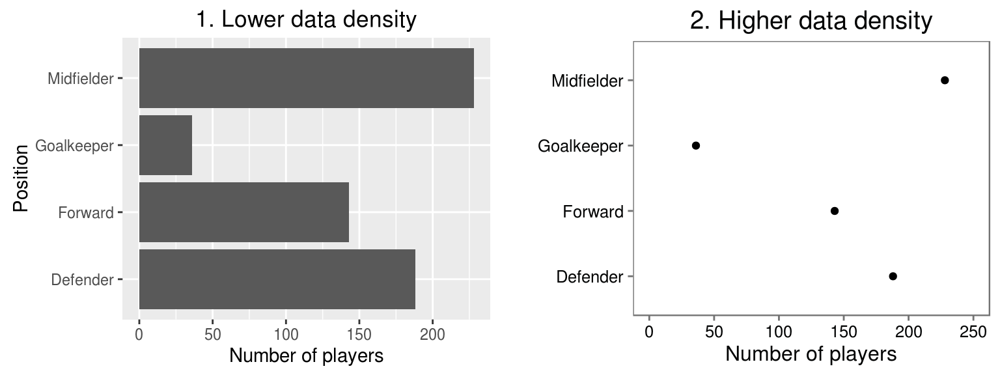
The two graphs below show another example of very different data densities in two plots showing the same information:
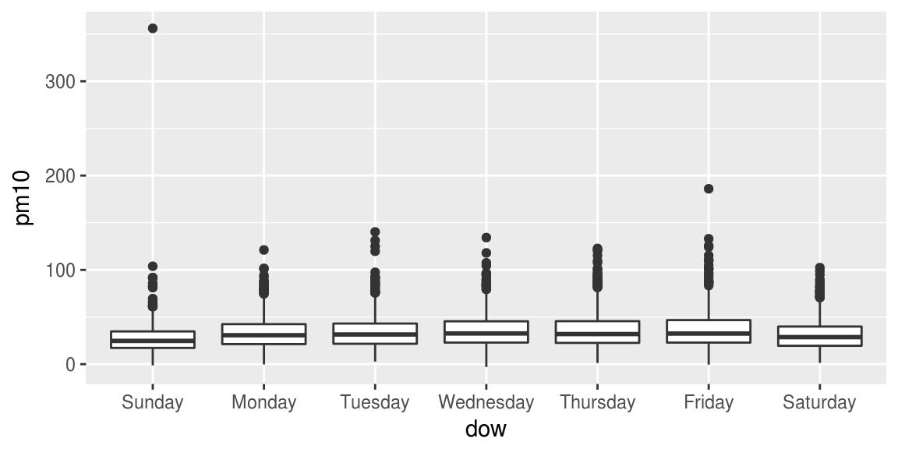
One quick way to increase data density in ggplot2 is to change the theme for the plot. This essentially changes the “background” elements to a plot, including elements like the plot grid, background color, and the font used for labeling.
Some themes come with ggplto2, including:
theme_bwtheme_minimaltheme_void
The ggthemes packages has some excellent additional themes.
The following slides show some examples of the effects of using different themes. The following code creates a plot of daily deaths in Chicago in July 1995:
chic_plot <- ggplot(chic_july, aes(x = date, y = death)) +
geom_point(color = "red")Next, we can see how the graph looks with the default theme and with other themes.
The left graph shows the graph with the default theme, while the right shows the effect of adding the black-and-white theme that comes with ggplot2 as theme_bw:
a <- chic_plot
b <- chic_plot + theme_bw()
grid.arrange(a, b, ncol = 2)
Stephen Few theme:
a <- chic_plot
b <- chic_plot + theme_few()
grid.arrange(a, b, ncol = 2)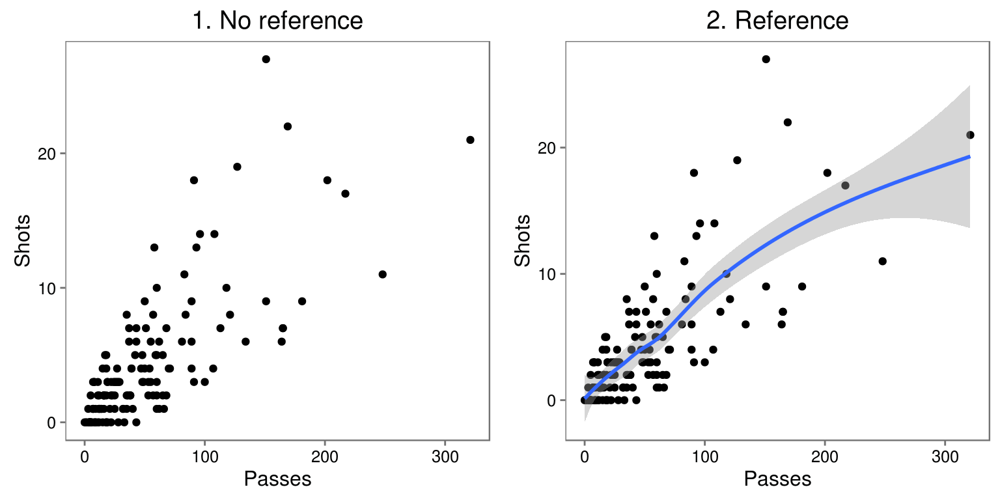
Edward Tufte theme:
a <- chic_plot
b <- chic_plot + theme_tufte()
grid.arrange(a, b, ncol = 2)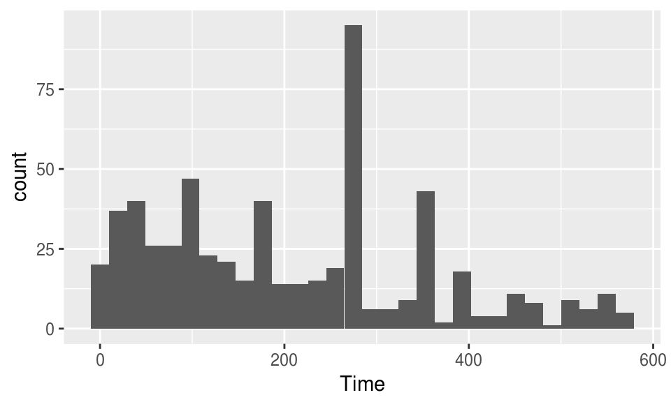
You can even use themes to add some questionable choices for different elements. For example, ggthemes includes an Excel theme:
a <- chic_plot
b <- chic_plot + theme_excel()
grid.arrange(a, b, ncol = 2)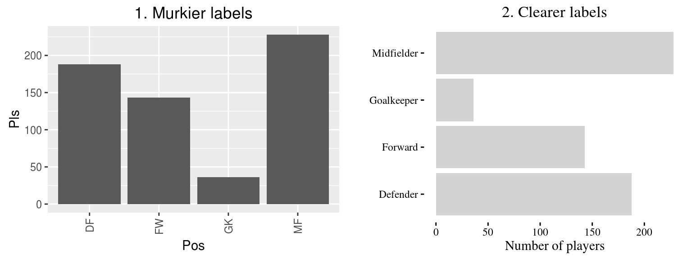
4.3 Meaningful labels
Guideline 2: Use clear, meaningful labels.
Graph defaults often use abbreviations for axis labels and other labeling. Further, text labels can sometimes be aligned in a way that makes them hard to read. The plots below give an example of the same information shown without (left) and with (right) clear, meaningful labels.
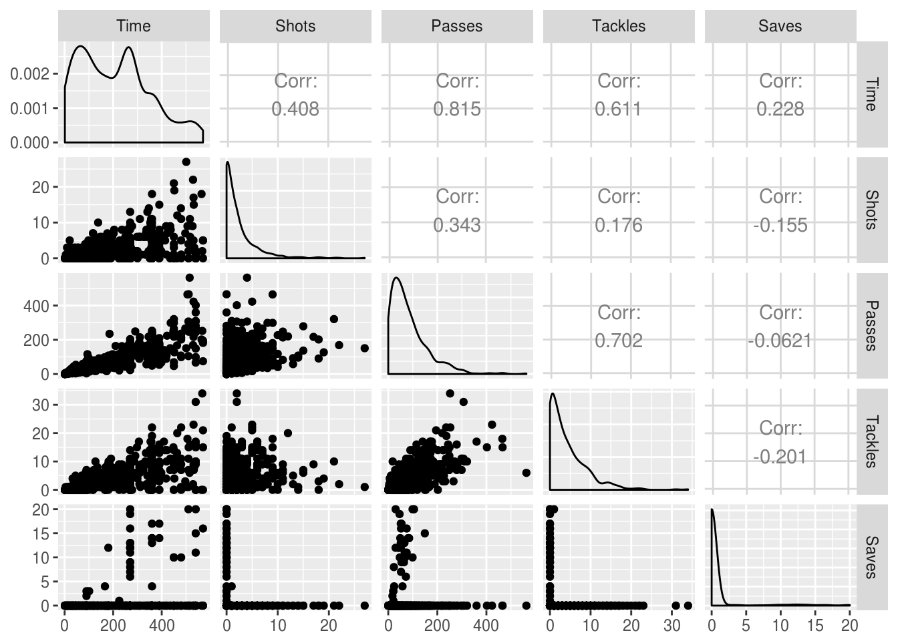
There are a few strategies you can use to make labels clearer:
- Add
xlabandylabelements to the plot, rather than relying on the column names in the original data. This can also be done withscaleelements (e.g.,scale_x_continuous), which give you more power to also make other changes to the x- and y-axes. - Include units of measurement in axis titles when relevant. If units are dollars or percent, check out the
scalespackage, which allows you to add labels directly to axis elements by including arguments likelabels = percentinscaleelements. - If the x-variable requires longer labels (player positions in the example above), consider flipping the coordinates, rather than abbreviating or rotating the labels. You can use
coord_flipto do this.
4.4 References
Guideline 3: Provide useful references.
Data is easier to interpret when you add references. For example, if you show what it typical, it helps viewers interpret how unusual outliers are. The graph below on the right has added shading showing the range of daily deaths in July in Chicage for 1990–1994 and 1996–2000, to clarify how unusual July 1995 was.
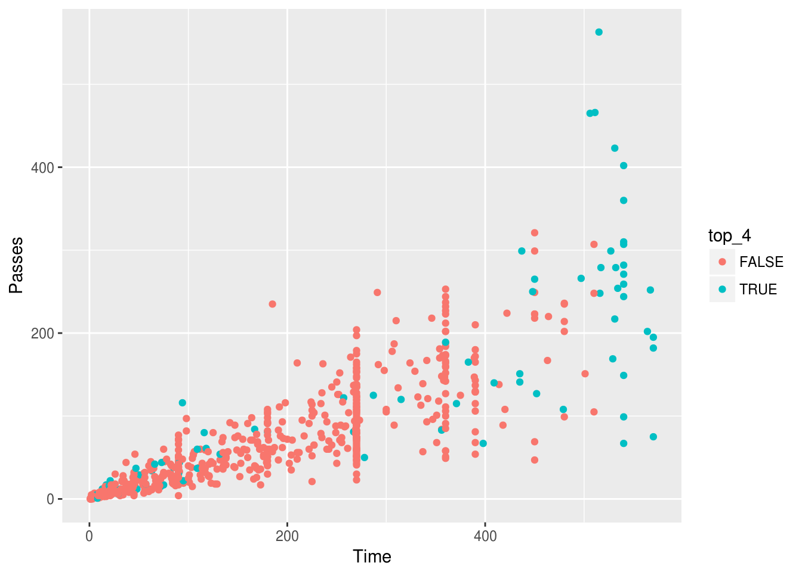
Another useful way to add references is to add a linear or smooth fit to the data, to help clarify trends in the data.
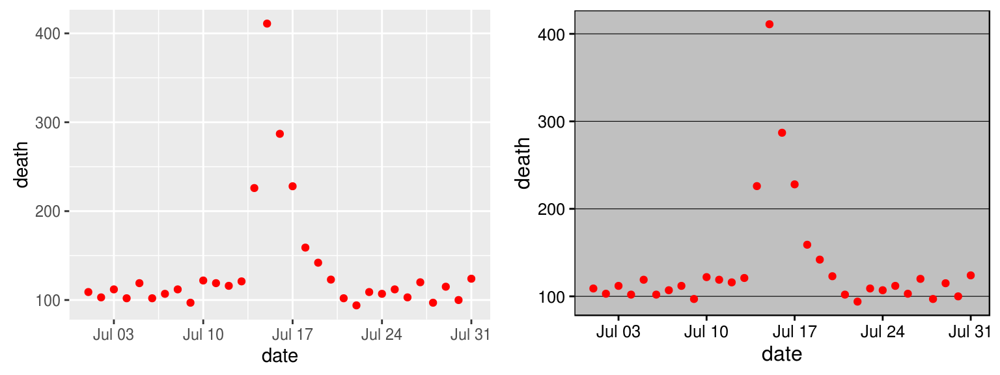
You can use the function geom_smooth to add a smooth or linear reference line:
ggplot(worldcup, aes(x = Passes, y = Shots)) +
geom_point() + theme_few() +
geom_smooth(method = "lm")The most useful geom_smooth parameters to know are:
method: The default is to add a loess curve if the data includes less than 1000 points and a generalized additive model for 1000 points or more. However, you can change to show the fitted line from a linear model usingmethod = "lm"or from a generalized linear model usingmethod = "glm".span: How wiggly or smooth the smooth line should be (smaller value: more wiggly; larger value: more smooth)se: TRUE or FALSE, indicating whether to include shading for 95% confidence intervals.level: Confidence level for confidence interval (e.g.,0.90for 90% confidence intervals)
Lines and polygons can also be useful for adding references. Useful geoms include:
geom_hline,geom_vline: Add a horizontal or vertical linegeom_abline: Add a line with an intercept and slopegeom_polygon: Add a filled polygongeom_path: Add an unfilled polygon
When adding these references:
- Add reference elements first, so they will be plotted under the data, instead of on top of it.
- Use
alphato add transparency to these elements. - Use colors that are unobtrusive (e.g., grays)
- For lines, consider using non-solid line types (e.g.,
linetype = 3)
4.5 Highlighting
Guideline 3: Highlight interesting aspects.
Consider adding elements to highlight noteworthy elements of the data. For example, in the graph on the right, the days of a major heat wave have been highlighted with a red line.
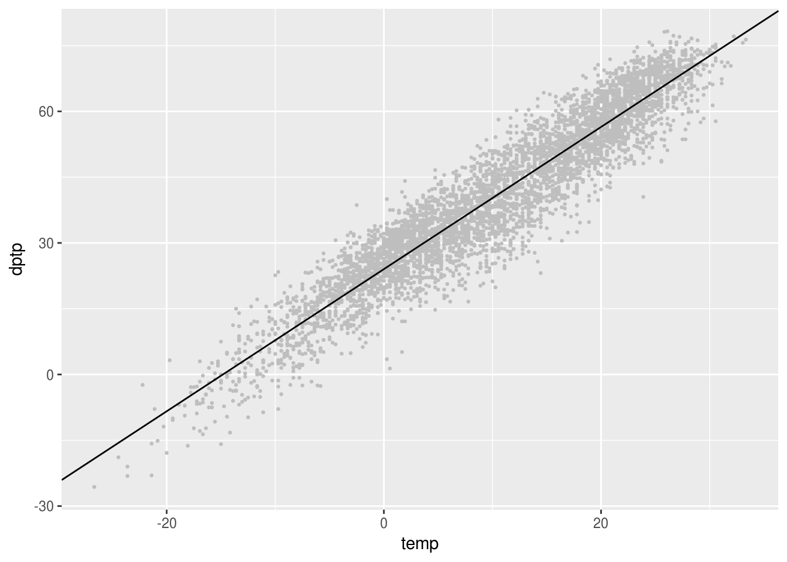
In the below graphs, the names of the players with the most shots and passes have been added to highlight these unusual points.
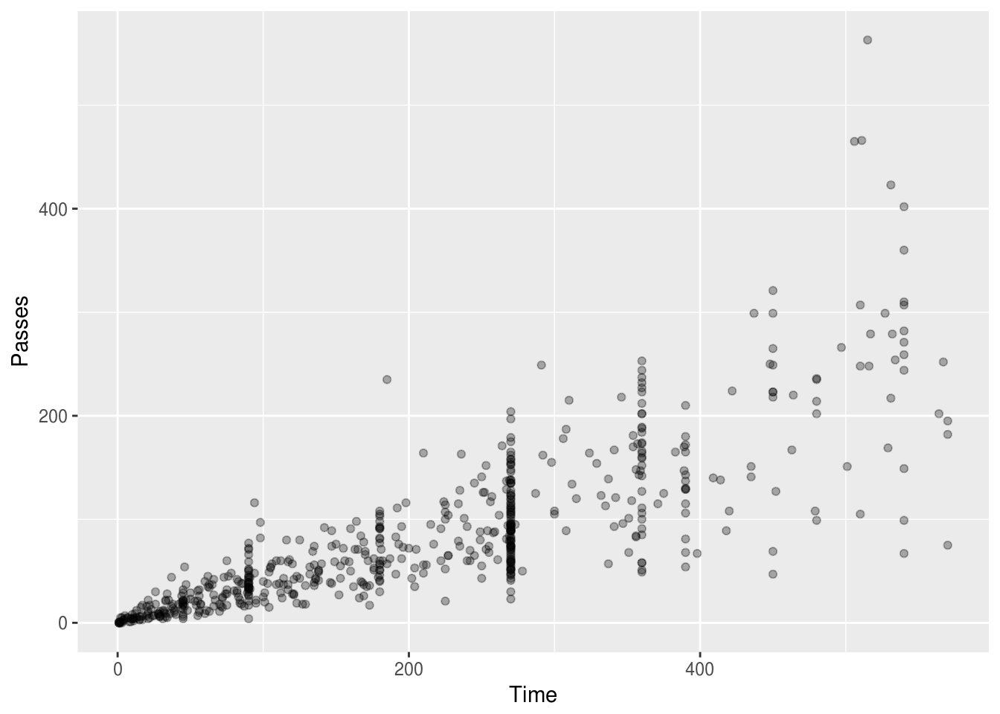
One helpful way to annotate is with text, using geom_text(). For this, you’ll first need to create a dataframe with the hottest day in the data:
hottest_day <- chic_july %>%
filter(temp == max(temp))
hottest_day[ , 1:6]## date time year month doy dow
## 1 1995-07-13 3116 1995 7 194 Thursdaychic_plot + geom_text(data = hottest_day,
label = "Max",
size = 3)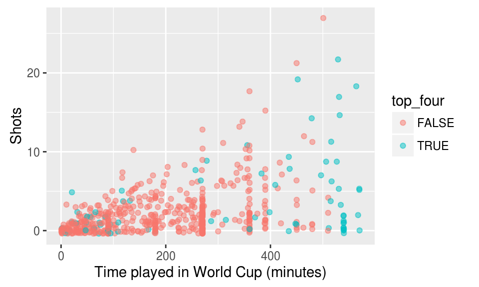
With geom_text, you’ll often want to use position adjustment (the position parameter) to move the text so it won’t be right on top of the data points:
chic_plot + geom_text(data = hottest_day,
label = "Max",
size = 3, hjust = 0, vjust = -1)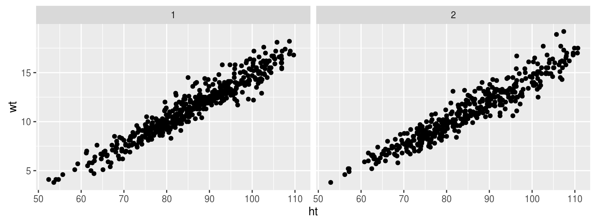
You can also use lines to highlight. For this, it is often useful to create a new dataframe with data for the reference. To add a line for the Chicago heat wave, I’ve added a dataframe called hw with the relevant date range. I’m setting the y-value to be high enough (425) to ensure the line will be placed above the mortality data.
hw <- data.frame(date = c(as.Date("1995-07-12"),
as.Date("1995-07-16")),
death = c(425, 425))
b <- chic_plot +
geom_line(data = hw,
aes(x = date, y = death),
size = 2)b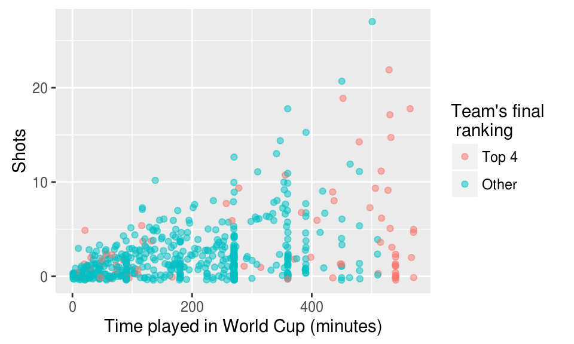
4.6 Order
Guideline 4: Make order meaningful.
You can make the ranking of data clearer from a graph by using order to show rank. Often, factor or categorical variables are ordered by something that is not interesting, like alphabetical order.
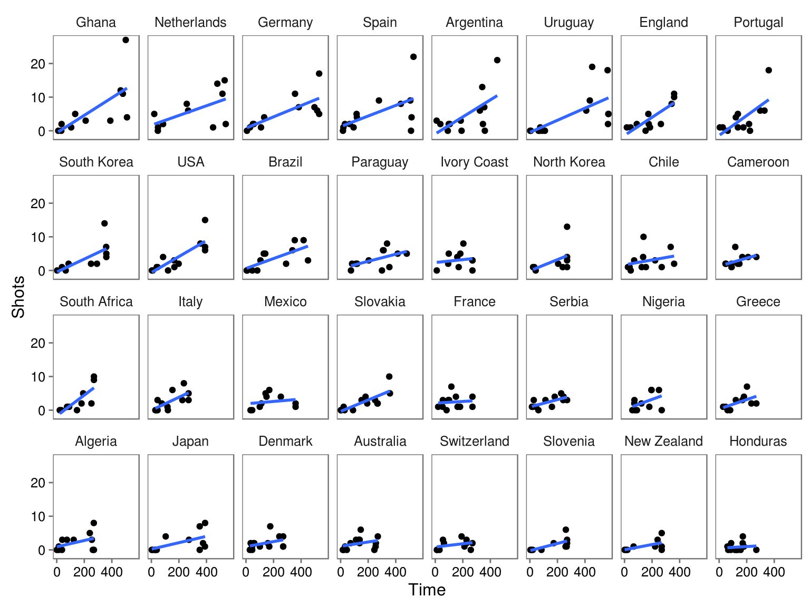
You can re-order factor variables in a graph by resetting the factor using the factor function and changing the order that levels are included in the levels parameter.
4.7 Small multiples
Guideline 5: When possible, use small multiples.
Small multiples are graphs that use many small plots showing the same thing for different facets of the data. For example, instead of using color in a single plot to show data for males and females, you could use two small plots, one each for males and females.
Typically, in small multiples, all plots with use the same x- and y-axes. This makes it easier to compare across plots, and it also allows you to save room by limiting axis annotation.
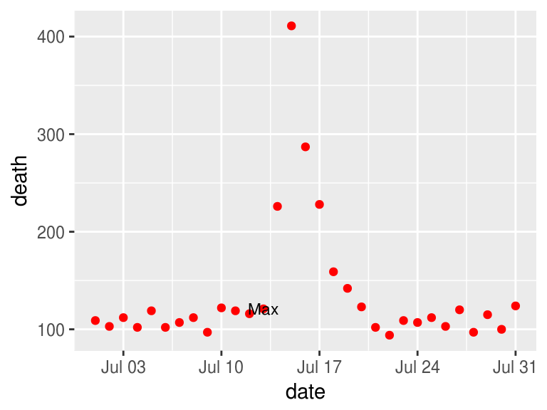
You can use the facet functions to create small multiples. This separates the graph into several small graphs, one for each level of a factor.
The facet functions are:
facet_grid()facet_wrap()
For example, to create small multiples by sex for the Nepali dataset, when plotting height versus weight, you can call:
ggplot(nepali, aes(ht, wt)) +
geom_point() +
facet_grid(. ~ sex)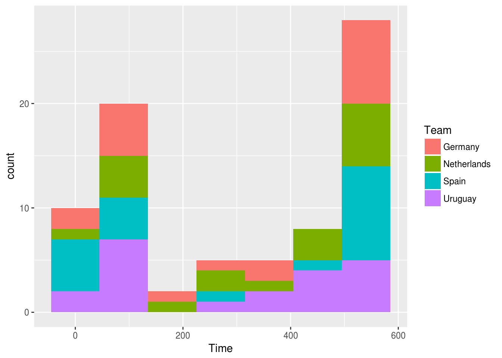
The facet_grid function can facet by one or two variables. One will be shown by rows, and one by columns:
## Generic code
facet_grid([factor for rows] ~ [factor for columns])The facet_wrap() function can only facet by one variable, but it can “wrap” the small graphs for that variable, so the don’t all have to be in one row or column:
## Generic code
facet_wrap(~ [factor for faceting], ncol = [# of columns])Often, when you do faceting, you’ll want to re-name your factors levels or re-order them. For this, you’ll need to use the factor() function on the original vector. For example, to rename the sex factor levels from “1” and “2” to “Male” and “Female”, you can run:
nepali <- nepali %>%
mutate(sex = factor(sex, levels = c(1, 2),
labels = c("Male", "Female")))Notice that the labels for the two graphs have now changed:
ggplot(nepali, aes(ht, wt)) +
geom_point() +
facet_grid(. ~ sex)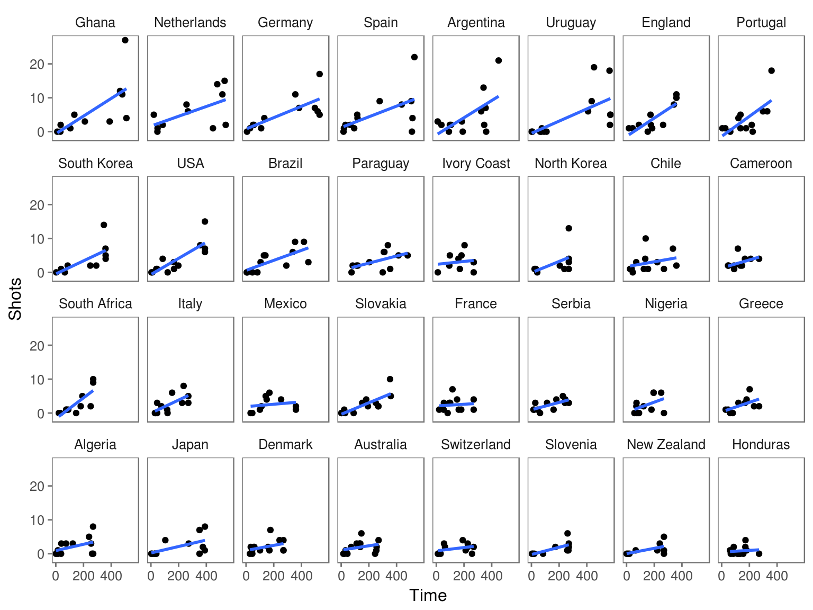
To re-order the factor, and show the plot for “Female” first, you can use factor to change the order of the levels:
nepali <- nepali %>%
mutate(sex = factor(sex, levels = c("Female", "Male")))Now notice that the order of the plots has changed:
ggplot(nepali, aes(ht, wt)) +
geom_point() +
facet_grid(. ~ sex)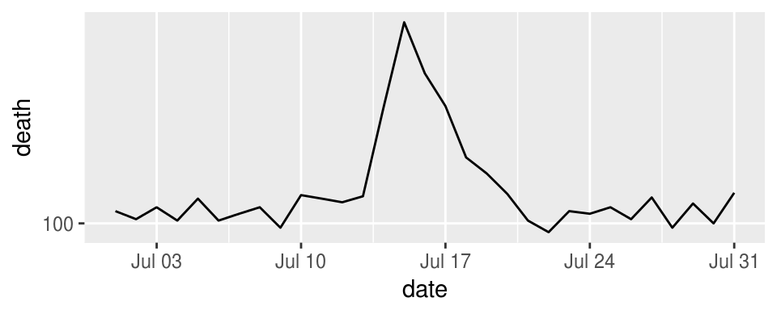
4.8 To find out more
Some excellent further references for plotting are:
- R Graphics Cookbook (book and website)
- Google images
4.9 In-course exercise
4.9.1 Designing a plot
For today’s exercise, you’ll be building a plot using the worldcup data from the faraway package. First, load in that data.
Next, say you want to look at the relationship between the number of minutes that a player played in the 2010 World Cup (Time) and the number of shots the player took on goal (Shots). On a sheet of paper, and talking with your partner, decide how the two of you would design a plot to explore and present this relationship. How would you incorporate some of the principles of creating good graphs?
4.9.1.1 Example R code
library(faraway)
data(worldcup)
head(worldcup, 2)## Team Position Time Shots Passes Tackles Saves
## Abdoun Algeria Midfielder 16 0 6 0 0
## Abe Japan Midfielder 351 0 101 14 0This dataset has the players’ names as rownames, rather than in a column. Once we start using dplyr functions, we’ll lose these rownames. Therefore, start by converting the rownames to a column called Player:
library(dplyr)
worldcup <- worldcup %>%
mutate(Player = rownames(worldcup))
head(worldcup, 2)## Team Position Time Shots Passes Tackles Saves Player
## 1 Algeria Midfielder 16 0 6 0 0 Abdoun
## 2 Japan Midfielder 351 0 101 14 0 Abe4.9.2 Basic scatterplots with R base graphics and ggplot
Perform the following tasks:
- Install and load the
ggplot2andggthemespackages. - For the
worldcupdata, plot a scatterplot of Time (on the x-axis) versus Shots. - Add some ggplot elements to make this plot a bit more attractive. (For example, change the x- and y-axis labels and add a title.)
4.9.2.1 Example R code
Install and load the ggplot2 package:
# install.packages("ggplot2")
library(ggplot2)
# install.packages("ggthemes")
library(ggthemes)Use the R base graphics to create a scatterplot of Time versus Shots:
ggplot(worldcup, aes(x = Time, y = Shots)) +
geom_point()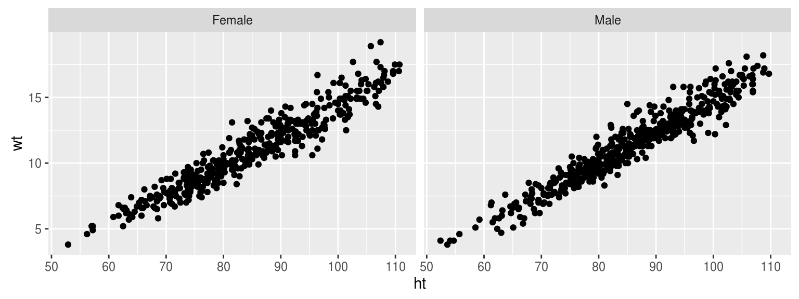
Use some of the plotting options to improve the graph’s appearance:
ggplot(worldcup, aes(x = Time, y = Shots)) +
geom_point() +
xlab("Minutes played") +
ylab("Shots on goal") +
ggtitle("Time played vs. shots taken\n World Cup 2010")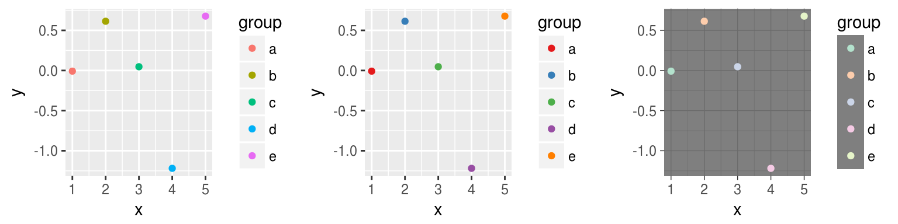
4.9.3 Fancier graphs
In this section, we’ll work on creating a plot like this:
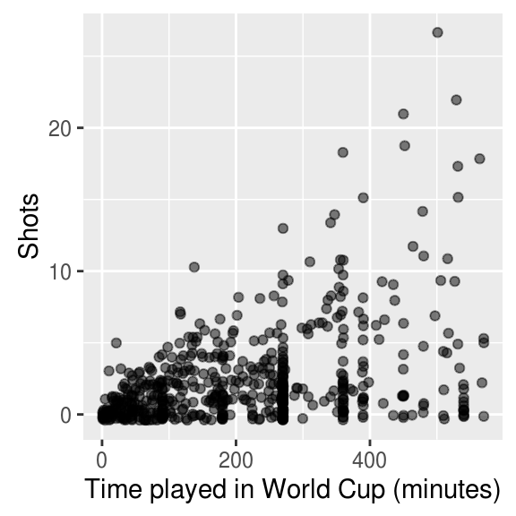
Try the following tasks:
- First, before you start coding, talk with your group members about how this graph is different from the simple one you created with
ggplotin the last section. Also discuss what you can figure out from this new graph that was less clear from the simpler one you created before. - Use the
xlab()function to make a clearer title for the x-axis. (You may have already written this code in the last section of this exercise.) - Often, in graphs with a lot of points, it’s hard to see some of the points, because they overlap other points. Three strategies to address this are: (a) make the points smaller; (b) make the points somewhat transparent; and (c) jitter the points. Try doing the first two with the simple ggplot scatterplot you created in the previous section of Shots by Time.
- Create a new column in the
worldcupdata calledtop_fourthat specifies whether or not theTeamfor that observation was one of the top four teams in the tournament (Netherlands, Uruguay, Spain, and Germany). Make the colors of the points correspond to whether the team was a top-four team. - Create small multiples. The relationship between time played and shots taken is probably different by the players’ positions. Use faceting to create different graphs for each position.
- Make order count: What order are the faceted graphs currently in? Offensive players have more chances to take shots than defensive players, so that might be a useful ordering for the facets. Re-order the
Positionfactor column to go from nearest your own goal to nearest the opponents goal, and then re-plot the graph from the previous step. - Highlighting interesting data: Who had the most shots in the 2010 World Cup? Was he on a top-four team? Use
geom_text()to label his point on the graph with his name. - Increase data density: Try changing the theme, to come up with a graph with a bit less non-data ink. From the
ggthemespackage (you’ll need to install it if you don’t already have it), try some of the following themes:theme_few(),theme_tufte(),theme_stata(),theme_fivethirtyeight(),theme_economist_white(),theme_wsj().
4.9.3.1 Example R code
As a reminder, here’s the code to do a simple scatterplot ot Shots by Time for the worldcup data:
ggplot(worldcup, aes(x = Time, y = Shots)) +
geom_point()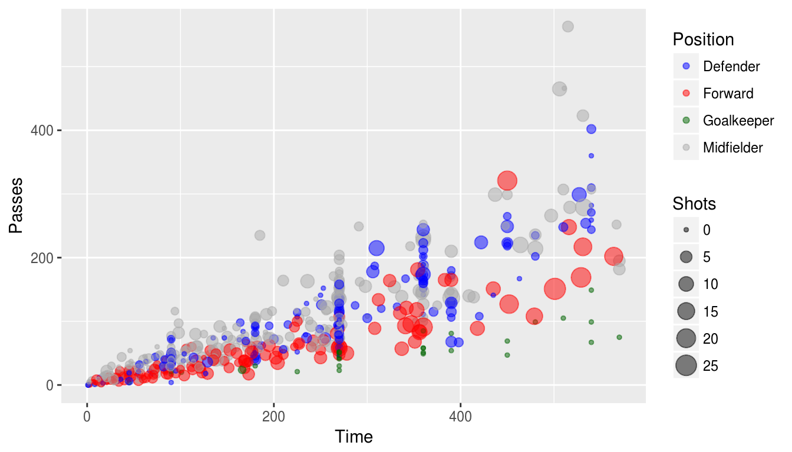
To add a clearer x-axis label that the current one, use xlab():
ggplot(worldcup, aes(x = Time, y = Shots)) +
geom_point() +
xlab("Time played in World Cup (minutes)")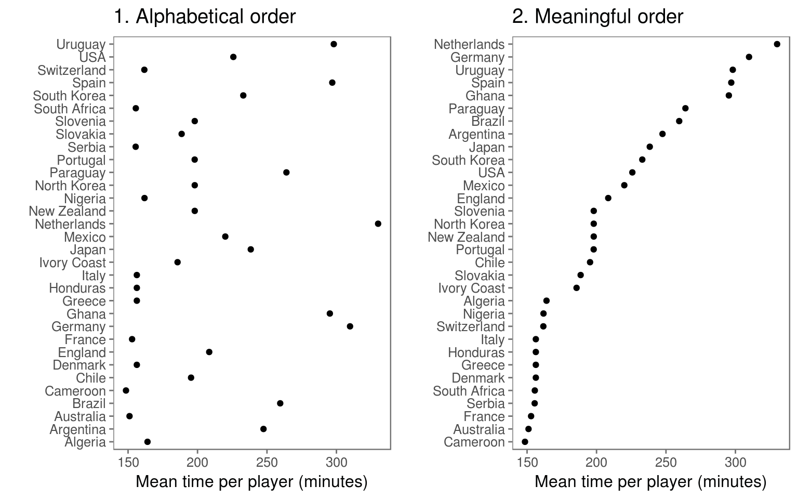
To make the points smaller, use the size option in geom_point() (smaller than about 2 = smaller than default, larger than about 2 = larger than default):
ggplot(worldcup, aes(x = Time, y = Shots)) +
geom_point(size = 1) +
xlab("Time played in World Cup (minutes)")To make the points semi-transparent, use the alpha option in geom_point() (closer to 0 = more tranparent, closer to 1 = more opaque):
ggplot(worldcup, aes(x = Time, y = Shots)) +
geom_point(alpha = 0.5) +
xlab("Time played in World Cup (minutes)")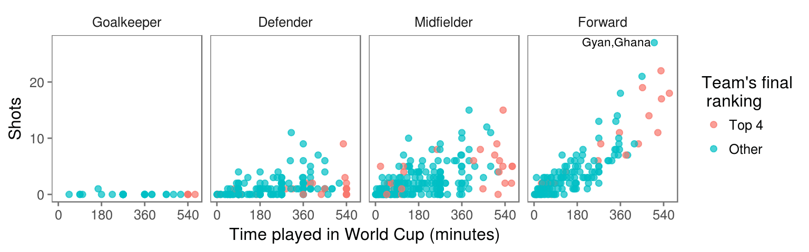
To jitter the points some, use the position = "jitter" option in geom_point():
ggplot(worldcup, aes(x = Time, y = Shots)) +
geom_point(size = 1.5, position = "jitter",
alpha = 0.5) +
xlab("Time played in World Cup (minutes)")
As an alternative, you could also jitter the points by using geom_jitter rather than geom_point:
ggplot(worldcup, aes(x = Time, y = Shots)) +
geom_jitter(size = 1.5, alpha = 0.5, width = 0.25) +
xlab("Time played in World Cup (minutes)")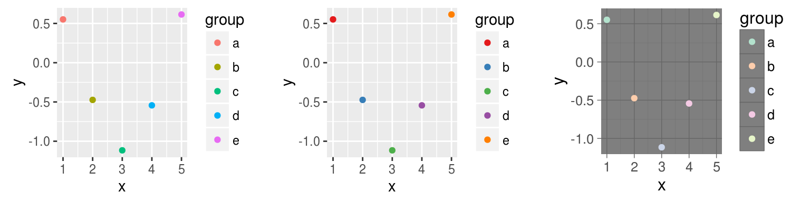
“Jittering” the points means adding some extra random noise in either the x- or y-direction, or in both directions. This technique can be particularly useful when you are trying to plot points for which one dimension is categorical, rather than continuous. You can specify which direction (x and / or y) is jittered, as well as the amount of noise to add. To find out more, check out the helpfile for the geom_jitter function.
To create a new column called top_four, first create vector that lists those top four teams, then create a logical vector in the dataframe for whether the team for that observation is in one of the top four teams:
worldcup <- worldcup %>%
mutate(top_four = Team %in% c("Spain", "Germany",
"Uruguay", "Netherlands"))
summary(worldcup$top_four)## Mode FALSE TRUE NA's
## logical 517 78 0To color points by this variable, use color = in the aes() part of the ggplot() call:
ggplot(worldcup, aes(x = Time, y = Shots,
color = top_four)) +
geom_point(size = 1.5, position = "jitter",
alpha = 0.5) +
xlab("Time played in World Cup (minutes)")To create nicer labels for the legend for color, convert the top_four column into the factor class, with the labels you want to use in the figure legend:
worldcup <- worldcup %>%
mutate(top_four = factor(top_four, levels = c(TRUE, FALSE),
labels = c("Top 4", "Other")))
summary(worldcup$top_four)## Top 4 Other
## 78 517ggplot(worldcup, aes(x = Time, y = Shots,
color = top_four)) +
geom_point(size = 1.5, position = "jitter",
alpha = 0.5) +
xlab("Time played in World Cup (minutes)")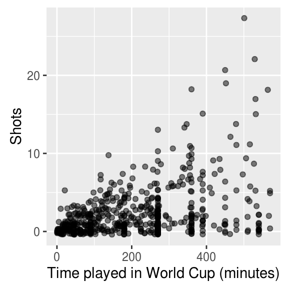
As a note, you can use the scale_color_discrete() function to put in a nicer legend title:
ggplot(worldcup, aes(x = Time, y = Shots,
color = top_four)) +
geom_point(size = 1.5, position = "jitter",
alpha = 0.5) +
xlab("Time played in World Cup (minutes)") +
scale_color_discrete(name = "Team's final\n ranking")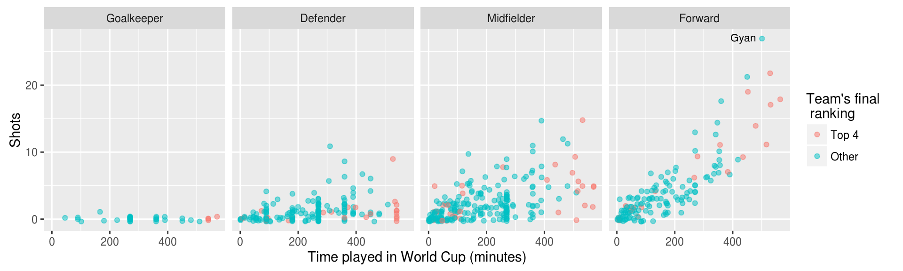
To create small multiples, use the facet_grid() command:
ggplot(worldcup, aes(x = Time, y = Shots,
color = top_four)) +
geom_point(size = 1.5, position = "jitter",
alpha = 0.5) +
xlab("Time played in World Cup (minutes)") +
scale_color_discrete(name = "Team's final\n ranking") +
facet_grid(. ~ Position)
To re-order the Position column of the dataframe, use the levels option of the factor() function. This re-sets how R saves the order of the levels of this factor.
worldcup <- worldcup %>%
mutate(Position = factor(Position,
levels = c("Goalkeeper", "Defender",
"Midfielder", "Forward")))
levels(worldcup$Position)## [1] "Goalkeeper" "Defender" "Midfielder" "Forward"
Note from this code example that you can use the levels function to find out the levels and their order for a factor-class vector.
Then use the same code from before for your plot:
ggplot(worldcup, aes(x = Time, y = Shots,
color = top_four)) +
geom_point(size = 1.5, position = "jitter",
alpha = 0.5) +
xlab("Time played in World Cup (minutes)") +
scale_color_discrete(name = "Team's final\n ranking") +
facet_grid(. ~ Position)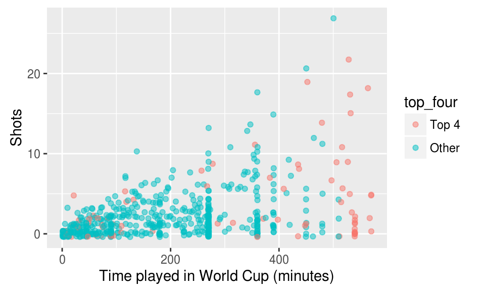
You can use the filter function with a logical statement comparing Shots to the maximum value of Shots (max(Shots)) to filter down to the row or rows of the player or players with the most shots:
most_shots <- worldcup %>%
filter(Shots == max(Shots))
most_shots## Team Position Time Shots Passes Tackles Saves Player top_four
## 1 Ghana Forward 501 27 151 1 0 Gyan OtherUse geom_text() to label his point on the graph with his name. You may need to mess around with some of the options in geom_text(), like size, hjust, and vjust (hjust and vjust say where, in relation to the point location, to put the label), to get something you’re happy with. Also, I pasted on an extra space at the end of the player’s name, to add some padding so the label wouldn’t be right on top of the point.
ggplot(worldcup, aes(x = Time, y = Shots,
color = top_four)) +
geom_point(size = 1.5, position = "jitter",
alpha = 0.5) +
xlab("Time played in World Cup (minutes)") +
scale_color_discrete(name = "Team's final\n ranking") +
facet_grid(. ~ Position) +
geom_text(data = most_shots,
aes(label = paste(Player, " ")),
colour = "black", size = 3,
hjust = 1, vjust = 0.4)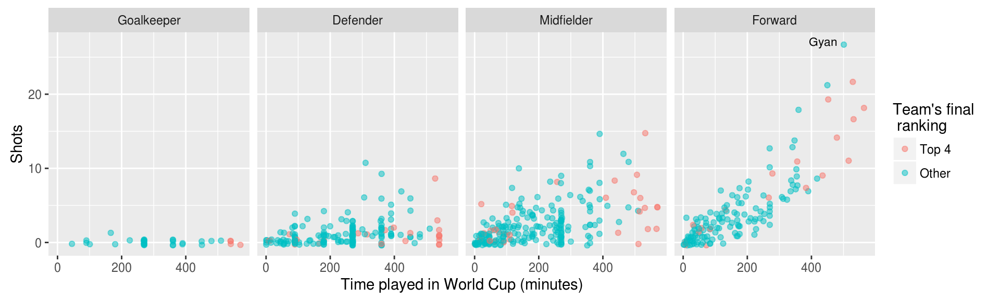
Try out different themes for the plot. First, I’ll save everything we’ve done so far as the object shot_plot, then I’ll try adding different themes:
shot_plot <- ggplot(worldcup, aes(x = Time, y = Shots,
color = top_four)) +
geom_point(size = 1.5, position = "jitter",
alpha = 0.5) +
xlab("Time played in World Cup (minutes)") +
scale_color_discrete(name = "Team's final\n ranking") +
facet_grid(. ~ Position) +
geom_text(data = most_shots,
aes(label = paste(Player, " ")),
colour = "black", size = 3,
hjust = 1, vjust = 0.4)
shot_plot + theme_few()
shot_plot + theme_tufte()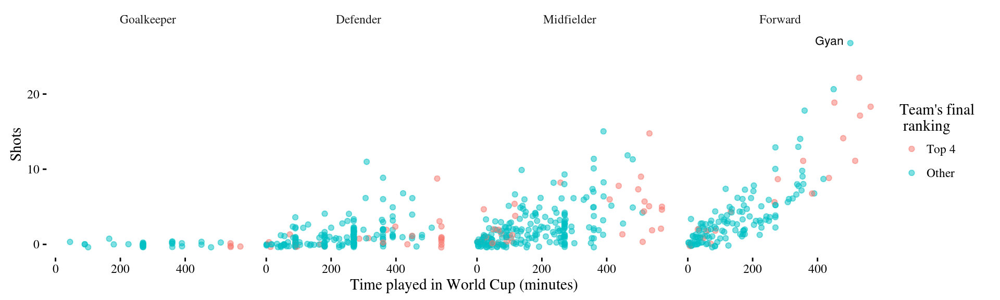
shot_plot + theme_wsj()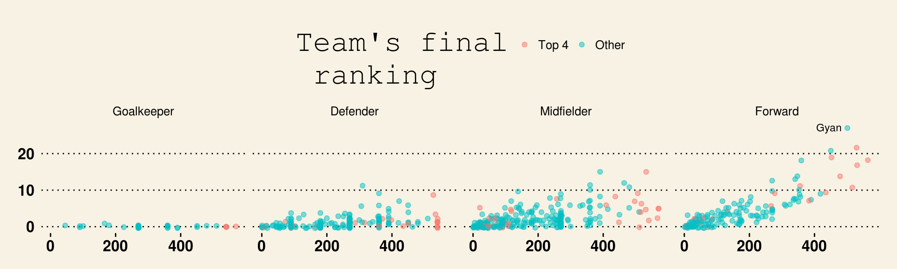
shot_plot + theme_fivethirtyeight()
shot_plot + theme_stata()
shot_plot + theme_economist_white()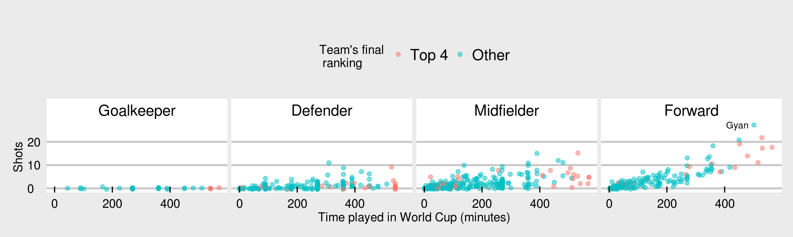